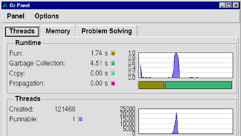
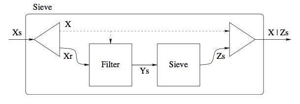
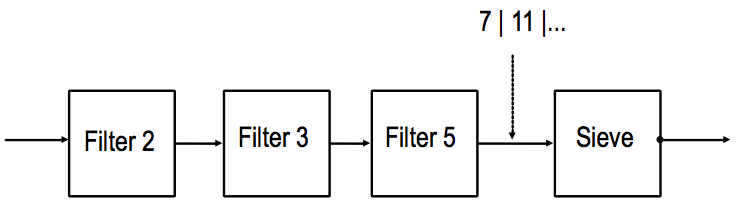
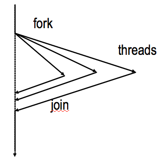

Deklarative Nebenläufigkeit
Parallelprogrammierung
Einführung
Die Ausführungen sind RoyHaridi2004 entnommen.
Einstieg in Mozart/Oz
- Oz ist eine Multi-Paradigmensprache
- funktional, objektorientiert, logisch, „constraint”
- nebenläufig
- verteilt
- Entwicklungsumgebung
- Oz Programming Interface (OPI)
- realisiert als major Emacs mode
- Demo:
{Show 'Hello World'} - Demo:
{Browse 'Hello World'} Demo:
declare W H {Browse foo(width:W height:H surface:thread W*H end)}
- Demo:
Die Sprache Oz
Daten
- Variablen
- sind single assignment variables.
- Deklarationen
local X Y Z in S enddeclare X Y Z in S- Typen
- Literale
Atoms:
a foo '=' ':=' 'OZ 3.0' 'Hello World'
- Names:
{NewName X}bindet einen weltweit eindeutigen Namen anX.Boolist ein Untertyp vonName.
- Records
Records sind zusammengesetzte Strukturen. Ein Record hat ein label und eine feste Anzahl von Komponenten. Beispiel:
tree(key: I value: Y left: LT right: RT)
4 Konponenten; jede Komponente ist ein Feature:Field-Paar
- Tuples
sind „Records ohne Features“. Beispiel:
tree(I Y LT RT)
ist äquivalent zu
tree(1:I 2:Y 3:LT 4:RT)
Tupel-Konstruktor
'#':'#'(1 2 3) 1#2#3 '#'() '#'(X)
- Listen
- Eine Liste ist entweder das Atom
nil(für die leere Liste) oder ein Tuple, das mit dem Infix-Operator|erzeugt wurde.Die Liste mit den ersten drei natürlichen Zahlen:
1|2|3|nil
Alternative Schreibweise für geschlossene Listen:
[1 2 3]
Eine Liste mit 1 und 2 und der Restliste
X:1|2|X
oder „ausführlich”:
'|'(1 '|'(2 X))
Listen von Zeichen (
char), genannt Strings:"OZ 3.0"
entspricht der Liste
[79 90 32 51 46 48]
oder
[&O &Z & &3 &. &0]
- Listen sind Tuples sind Records
local L1 L2 L3 Head Tail in L1 = Head|Tail Head = 1 Tail = 2|nil L2 = [1 2] {Browse L1==L2} L3 = '|'(1:1 2:'|'(2 nil)) {Browse L1==L3} end
Kontrollstrukturen
- Sequenz
S1 S2- Fallunterscheidung
if B then S1 else S2 end if B1 then S1 end if B1 then S1 elseif B2 then S2 else S3 end
case-Anweisung – Mustervergleich
case E of Pattern_1 then S1 [] Pattern_2 then S2 [] ... else S end
proc {Insert Key Value TreeIn ?TreeOut} if TreeIn == nil then TreeOut = tree(Key Value nil nil) else local tree(K1 V1 T1 T2) = TreeIn in if Key == K1 then TreeOut = tree(Key Value T1 T2) elseif Key < K1 then local T in TreeOut = tree(K1 V1 T T2) {Insert Key Value T1 T} end else local T in TreeOut = tree(K1 V1 T1 T) {Insert Key Value T2 T} end end end end end
% case for pattern matching proc {Insert Key Value TreeIn ?TreeOut} case TreeIn of nil then TreeOut = tree(Key Value nil nil) [] tree(K1 V1 T1 T2) then if Key == K1 then TreeOut = tree(Key Value T1 T2) elseif Key < K1 then T in TreeOut = tree(K1 V1 T T2) {Insert Key Value T1 T} else T in TreeOut = tree(K1 V1 T1 T) {Insert Key Value T2 T} end end end
Prozeduren
- Definition
proc {P X1 ... Xn} S end
- Beispiel
local Max X Y Z in proc {Max X Y Z} if X >= Y then Z = X else Z = Y end end X = 5 Y = 10 {Max X Y Z} {Browse Z} end
- Anonyme Prozeduren
P = proc {$ X1 ... Xn} S end
- Beispiel
local Max = proc {$ X Y Z} if X >= Y then Z = X else Z = Y end end X = 5 Y = 10 Z in {Max X Y Z} {Browse Z} end
Funktionen
- Definition
fun {F X1 ... Xn} S E endmit
Sist Anweisung (Statement),Eist Ausdruck (Expression) ist eine abgekürzte Schreibweise fürproc {F X1 ... Xn R} S R=E end
- Beispiel
local fun {Mxax X Y } if X >= Y then X else Y end end in {Browse {Max 10 5}} end
Nebenläufigkeit
…kann einfach sein
- Nutzung von dataflow variables: können nur einmalig an einen Wert gebunden werden
- Konsequenzen:
- das Ergebnis eines Programms bleibt das gleiche, egal ob nebenläufig oder nicht
- inkrementelle Berechnungen möglich
- simples Beispiel
sequentielle Version:
declare Gen fun {Gen L H} {Delay 100} if L>H then nil else L |{Gen L+1 H} end end Xs={Gen 1 10} Ys={Map Xs fun {$ X} X*X end} {Browse Ys}
nebenläufige Version:
thread Xs={Gen 1 10} end thread Ys={Map Xs fun {$ X} X*X end} end
- Worin besteht der Unterschied in der Ausführung?
Nicht-Determinismus
Durch die thread-Anweisung sind grundsätzlich verschiedene
Ausführungsreihenfolgen möglich. Nach Ausführung der Instruktion
Ia im Thread T1
Ia Ib Ic
----->------>------> T1
\
>----->------> T2
I1 I2
könnte auf einer Einprozessormaschine als nächstes entweder Ib
oder I2 ausgeführt werden. Die Ausführung ist
nicht-deterministisch. (Auf einer Mehrprozessormaschine wäre
natürlich aus parallele Ausführung möglich.)
einige mögliche Ausführungsreihenfolgen
Ia I1 I2 Ib Ic ----->----->----->----->-----> Ia I1 Ib I2 Ic ----->----->----->----->-----> Ia Ib I1 I2 Ic ----->----->----->----->-----> Ia Ib Ic I1 I2 ----->----->----->----->----->
- Im deklarativ nebenläufigem Berechnungsmodell bleibt der
Nicht-Determinismus für den Programmierer unsichtbar:
- Datenflussvariablen können nur an einen einzigen Wert gebunden werden.
Jede Instruktion, die den Wert einer Datenflussvariablen verarbeiten will, muss warten, bis diese an einen Wert gebunden wird. Vgl. auch das folgende Beispiel:
declare X0 X1 X2 X3 in thread local Y0 Y1 Y2 Y3 in {Browse [Y0 Y1 Y2 Y3]} Y0 = X0+1 Y1 = X1+Y0 Y2 = X2+Y1 Y3 = X3+Y2 {Browse completed} end end {Browse [X0 X1 X2 X3]}
Das Ergebnis der Auswertung im Oz-Browser zeigt zunächst 8 ungebundene Variablen:
[_ _ _ _] [_ _ _ _]Erst wenn der Reihe nach die folgenden Bindungen ausgeführt werden.
X0 = 0 X1 = 1 X2 = 2 X3 = 3
Wenn
X0gebunden wird, wacht der Thread auf und kann die BindungY0 = X0+1vornehmen.
- Scheduling
- Der Scheduler wählt einen Thread aus, der im Zustand ready (oder runnable) ist. Das ist er, wenn er alle Information hat, um mindestens einen Berechnungsschritt auszuführen.
- Fall ein Thread nicht ready ist, ist er suspended. Seine erste Instruktion besitzt nicht alle für ihre Ausführung erforderlichen Informationen, sie wird blockiert.
- Der Scheduling-Prozess ist fair.
Weitere Beispiele
Threads und der Browser
thread {Browse 111} end {Browse 222}
In welcher Reihenfolge werden 111 und 222 angezeigt?
declare X1 X2 Y1 Y2 in thread {Browse X1} end thread {Browse Y1} end thread X1 = all|roads|X2 end thread Y1 = all|roams|Y2 end thread X2 = lead|to|rome|_ end thread Y2 = lead|to|rhodes|_ end
Was wird im Browser angezeigt?
Eine nebenläufige Map-Funktion
declare Map fun {Map Xs F} case Xs of nil then nil [] X|Xr then thread {F X} end |{Map Xr F} end end
thread ... endist hier ein AusdruckNach Eingabe der Anweisungen
declare F X Y Z {Browse thread {Map X F} end}
wird ein Haupt-Thread erzeugt, der
Mapausführt. Dieser wird sofort blockiert, weilXundefiniert ist.Nach Eingabe der Anweisungen
X = 1|2|Y fun {F X} X*X end
wird vom Haupt-Thread die Liste abgearbeitet und es werden zwei Threads
thread {F 1} endundthread {F 2} enderzeugt. Anschließend wird der Haupt-Thread wieder blockiert, weilYundefiniert ist.Schließlich wird mit
Y = 3|Z Z = nilwird die Berechnung des Haupt-Threads und des neu erzeugten Thread
thread {F 3} endabgeschlossen und die Ergebnisliste1|4|9|nilangezeigt.
Ineffiziente Fibonacci-Funktion
- Deklarative Programm können sehr leicht nebenläufig gemacht werden.
Benutze einfach die
thread-Anweisung, wo sie gebraucht wird.fun {Fib X} case X of 0 then 1 [] 1 then 1 else thread {Fib X-1} end + {Fib X-2} end end
Datenflussabhängigkeit
fun {Fib X} if X=<2 then 1 else F1 F2 in --> F1 = thread {Fib X-1} end | F2 = {Fib X-2} |-------------------------Datenflussabhängigkeit | --> F1 + F2 end end
- Die Funktion erzeugt eine exponentiell wachsende Zahl von Threads. Mit
{Fib 6}werden die folgenden Threads erzeugt:
{Browse {Fib 25}}werden etwa 23000 Threads erzeugt. - Das Erzeugen von Threads ist in Mozart/Oz zwar sehr billig, sollte aber nicht missbraucht werden.
Producer/Consumer
Kommunikation über Streams, die als Listen repräsentiert werden, deren Restliste ungebunden ist. Beispiel:
declare Xs Xs2 in XS = 0|1|2|3|2|Xs2
Inkrementelle Erweiterung:
declare Xs3 in XS2 = 5|6|7|Xs3
Das folgende Programm erzeugt asynchron einen Stream von Integers und summiert sie:
declare Generate Sum fun {Generate N Limit} if N<Limit then N|{Generate N+1 Limit} else nil end end fun {Sum Xs A} case Xs of X|Xr then {Sum Xr A+X} [] nil then A end end local Xs S in thread Xs={Generate 0 150000} end thread S={Sum Xs 0} end {Browse S} end
Auch mehrere Consumer sind möglich:
local Xs S1 S2 S3 in thread Xs={Generate 0 150000} end thread S1={Sum Xs 0} end thread S2={Sum Xs 0} end thread S3={Sum Xs 0} end end
Die drei Threads arbeiten völlig unabhängig voneinander und beeinflussen sich nicht gegenseitig, da sie den Stream nicht „verbrauchen” sondern nur lesen.
Filtern eines Streams
local Xs Ys S in thread Xs={Generate 0 150000} end thread Ys={Filter Xs IsOdd} thread S={Sum Xs 0} end {Browse S} end
mit
fun {IsOdd X} X mod 2 \= 0 end
Die folgende Abbildung veranschaulicht den Prozess:
Größeres Beispiel: Sieb des Eratosthenes
- Erzeugt Primzahlen
- Nimmt einen Stream \(2 ... N\), entfernt die 2 vom Rest des Streams
- Liefert den Rest des Streams an das nächste Sieb 
Die Funktion
Sievefun {Sieve Xs} case Xs of nil then nil [] X|Xr then Ys in thread Ys = {Filter Xr fun {$ Y} Y mod X \= 0 end} end X | {Sieve Ys} end end
erzeugt einen
filter-Thread für jeden Aufruf vonSieve.Beispielablauf
declare Sieve Generate fun {Generate N Limit} if N=<Limit then N | {Generate N+1 Limit} else nil end end fun {Sieve Xs} case Xs of nil then nil [] X|Xr then Ys in thread Ys = {Filter Xr fun {$ Y} Y mod X \= 0 end} end X | {Sieve Ys} end end local Xs Ys in thread Xs = {Generate 2 100000} end thread Ys = {Sieve Xs} end thread for Y in Ys do {Show Y} end end end
- Der Filterprozess

Mögliches Problem
- Ein Producer könnte viel schneller als ein Consumer arbeiten.
- Dadurch wird temporär ein großer Stream entstehen, der potentiell unbegrenzt viel Speicher benötigt.
- Lösungsmöglichkeiten:
- Man konfiguriert die Geschwindigkeiten der Threads mithilfe des Schedulers (z. B. durch Vergabe von Prioritäten).
- Man erzeugt einen Puffer mit endlicher Größe, so dass der Producer blockiert wird, wen der Puffer voll ist.
- Der Consumer signalisiert dem Producer, wenn er eine neues Datenelement benötigt (demand driven, lazy evaluation)
Steuerungsabstraktion
- Bisher wurde nur die „fork“-Operation durch
thread ... endbetrachtet. - Wie sieht die „join”-Operation aus?

Endeerkennung
- Die folgende Konstruktion sorgt für die Entdeckung der Termination von mehreren Threads und das Warten eines weiteren Threads auf dieses Ereignis.
Lösung ist einfach mit der Benutzung von Datenflussvariablen:
local X1 X2 X3 ... Xn1 Xn in thread ⟨stmt⟩1 X1=unit end thread ⟨stmt⟩2 X2=X1 end thread ⟨stmt⟩3 X3=X2 end ... thread ⟨stmt⟩n Xn=XnMinus1 end {Wait Xn} end
- Wenn alle Threads beendet sind, haben alle Variablen
X1 ... Xnden Wertunit. {Wait XN}blockiert den Haupt-Thread bisXngebunden ist.
Nebenläufige Komposition
So etwas hätte man gern:
conc ⟨stmt⟩1 [] ⟨stmt⟩2 [] ... [] ⟨stmt⟩n end
Könnte so implementiert werden:
declare Conc local proc {Conc1 Ps I O} case Ps of P|Pr then M in thread {P} M = I end {Conc1 Pr M O} [] nil then O = I end end in proc {Conc Ps} X in {Conc1 Ps unit X} {Wait X} end end
Concerwartet eine Liste von parameterlosen Prozeduren, die als Threads gestartet werden, und terminiert wenn all diese Threads beendet sind.Anwendungsbeispiel:
local proc {Ping N} for I in 1 .. N do {Delay 500} {Browse ping} end {Browse 'ping terminate'} end proc {Pong N} for I in 1 .. N do {Delay 600} {Browse pong} end {Browse 'pong terminate'} end in {Browse 'game started'} {Conc [ proc {$} {Ping 10} end proc {$} {Pong 10} end ]} {Browse 'game tarminated'} end